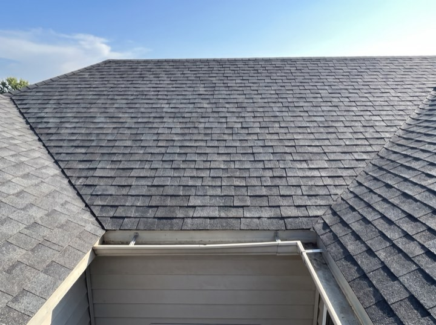
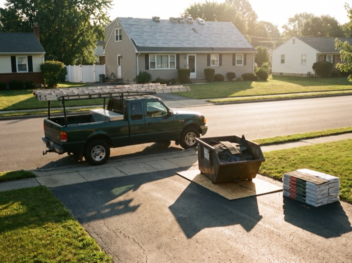
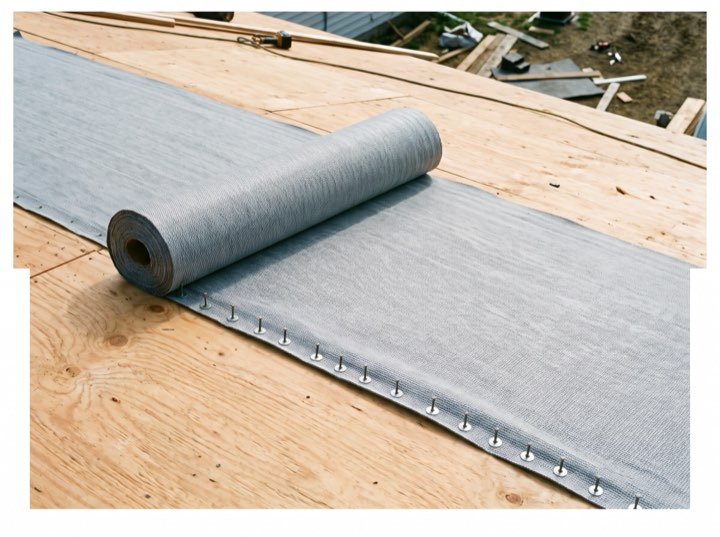
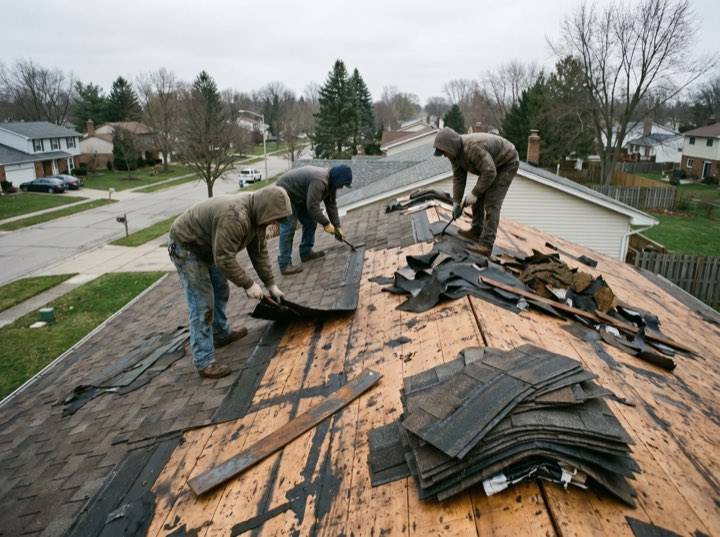

Dispatched
From the call to the clear-up.
What happens after someone answers: a crew, a protected site, and a driveway you can park on the same evening.





Dispatch open · A person, not a service
Storm damage, full replacements and repairs across the metro. One number, answered by a person in our office rather than a service, and a truck dispatched from whichever yard is closest to you.
One number to call
(570) 676-3382Financing
Financing from $89/mo“The financing made it possible. $110 a month instead of fifteen grand up front.” — Joel B., Riverbend
Insurance claims handled
Claim or quoteIf it's insurance, we meet your adjuster on site. If it's retail, you get a fixed written price with financing options.
Services
Most calls fall into one of these. If yours doesn't, ring us anyway — we'll tell you straight whether it's a repair or a replacement.
Free inspection, full photo report, and we meet the adjuster on site so nothing gets argued about later.
Architectural shingle, metal or tile. Tear-off, deck inspection, ice-and-water barrier, and the site left clean.
Active leak or missing shingles after a storm. Same-day tarping to stop the damage, permanent fix scheduled after.
Half the roofs we replace failed early because the attic couldn't breathe. We fix the cause, not just the symptom.
Results
Process
The part most roofers make you chase an office for, which is the part you want answered while it is still raining.
We go up, photograph everything, and tell you whether you need a roof or a repair. No pressure either way.
If it's insurance, we meet your adjuster on site. If it's retail, you get a fixed written price with financing options.
Most homes are one to two days. Materials delivered the morning of, site cleaned and magnet-swept at the end.
We walk it with you, register your warranty, and you have a direct number if anything ever comes up.
Dispatched
What happens after someone answers: a crew, a protected site, and a driveway you can park on the same evening.




Day, night, weekend, mid-storm: a person in our own office picks up, not an answering service taking a message for Monday.
(570) 676-3382Ring the number. A person answers, takes the address, and tells you when the truck will be there. No forms, no callback queue.